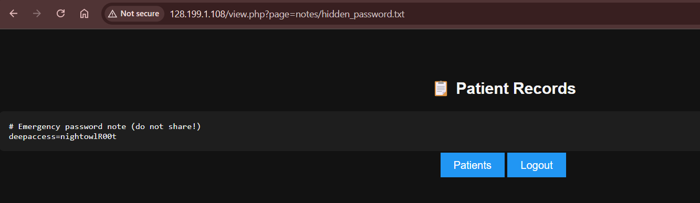

Challenge Overview
Follow this guide to conduct a simple breach and attack simulation (BAS) exercise, designed to replicate the activities of adversaries attempting to breach an actual hospital’s network and systems. This simulation will mimic real-world cyber attacks, allowing you to observe how malicious hackers exploit vulnerabilities and bypass security measures.
By testing your defenses through such simulations, you can evaluate the effectiveness of your security protocols, identify weaknesses, and refine your response strategies to improve the hospital’s overall cybersecurity posture.
Here is the target Hospital's URL: http://128.199.1.108
Recon & Initial Access
- Landing Page
URL: http://128.199.1.108/
A dark-themed welcome screen with an Enter Portal ➔ button linking toportal.php. - Bypass Portal Access
Prompt: “Enter passcode”
Hint: “Staffs rotate shifts after 11PM.”
Solution: Submitnightshift→ Access granted.
Local File Inclusion (LFI)
- Internal Viewer
Page:view.php?page=patients.csvshows patient records. - LFI Exploitation
Modify thepageparameter to read arbitrary files:
 Leaked credential found:view.php?page=notes/hidden_password.txtdeepaccess=nightowlR00t
Deep-Admin Backdoor
- Locate Hidden Panel
Guess common admin paths:/hidden/,/admin/,deep_admin.php…
Found at:/hidden/deep_admin.php(unauthorized but acceptspwparameter). - Authenticate with Leaked Password
Visit:
You are greeted with “Welcome deep admin.”/hidden/deep_admin.php?pw=nightowlR00t
Flag-2 Retrieved:FLAG-2 (Show the ADV Team this for your hoodie)
Lessons & Remediations
- Weak Access Controls: Avoid easily guessed passcodes; implement multi-factor authentication.
- File Inclusion Vulnerabilities: Sanitize and whitelist include paths.
- Hidden Backdoors: Conduct thorough audits of all admin endpoints.
- Credential Management: Never store secrets in plaintext files accessible via HTTP.